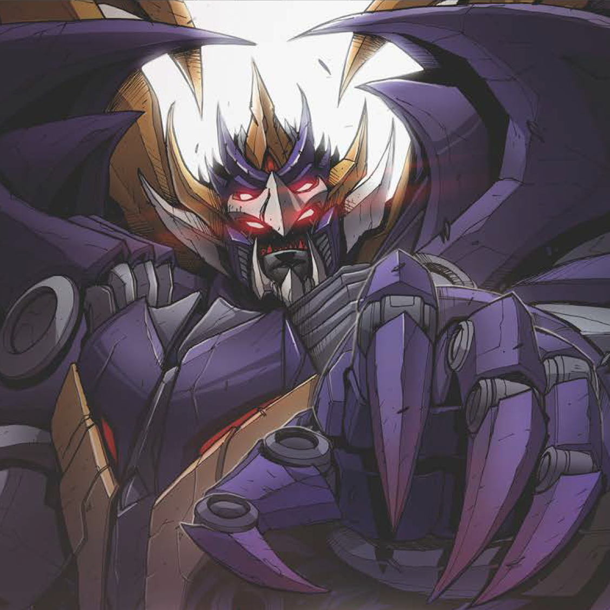

After carfully looking at Grapple's abilities it would be a shame to not use either of them. So my first
step was figuring out which
battle icons I must have in my deck. The first that came into mind is the White battle icon, as we see
in his bot mode we will need to flip exactly 4 different
icons and flipping a White during battle allows us to flip two more cards increasing our chances of
getting his ability going. At this point knowing that
White icons will have a huge influence in this deck with there count likely making up at 25% of the
deck, I knew who to team him up with. Say hello to...
Alright now that I have assembled my team it's time to figure out the rest of the battle icons.
We have White as our first icon, and after looking at our average attack being 3.5 in alt mode and 3 in
bot mode (not counting abilities) it's not very high.
Which conclude black be the second icon, and since we will be flipping a lot of battle icons due to
Seawatch's ability and the Rescue Patrols making up 75% of the team.
We might as well use the green battle icon to pick up cards and gurantee more consistant games. As for
our last Icon, I decide to go with orange to up our bot's attacks and
to maximise the use of Grapple I will prioitize double pip cards and in one case triple icon cards over
single pip cards. (I'll explain as this article continues.)
The first battlecard that is the main focus in this deck is
. A battlecard utility upgrade with a single green pip, that allows the user to draw a card at the
start of their turn.
Having this equipped before using Grapple's bot mode ability will ensure our hand replenishes and in
turn allows us to use Grapple's alt mode ability multiple times in a game.
I personal always place this utility on Seawatch but, depending how your match goes it's entirely up to
the user. The next obvious choice is to add
, which helps in many ways. First off it is a triple icon battlecard [Orange, Black, Green] allowing us
to pick it up after a battle or meeting 3 of the 4 icons needed
when flipping Grapple from bot mode to alt mode. If need we can also play this card and gain two of it's
effects, healing 1 from a melee character (aka Grapple) and planning
1 if we have a specialist (Rescue Patrols). In most scenarios planning 1 isn't as important unless
you're attacking with Grapple in bot mode towards an enemy in which case
planing a white icon card would be advised.
Now the next few battlecards are to help with our attacking first up are weapons.
a Orange Black icon card that provides
bold 1 to a character and
a White icon battlecard that when the upgraded character is flipped from one mode to another the
character gains
bold 2. I want to start off by saying
I realy enjoy Kinetic Intensifier Whip, that even if an opponents card causes you to scrap this before
battlecards are flip, your character still
keeps the bold it recieved from this card. Using this card on either Grapple or the Rescue Patrol grants
value, either by increasing your chances at popping Grapple's
bot mode ability or increasing the chances of flipping more White icons when on a Rescue Patrol
(flipping at least 2 White icons during battle allows the character to flip an additional 3
battlecards).
Some actions cards I would like to touch up on are
a Orange Black icon card that provides
bold 2 to a character until end of turn and
a White Green icon card that allows us to flip any of our bots from bot mode to alt mode. There's a nice
little combo with this card and previously mentioned Kinetic Intensifier Whip,
where it becomes possible to give one of your characters
bold 4. Escape Route has the green icon
that allows us to pick it up making it more consitant to pick up and play
or pick it up and collect those two icons to be discarded later when using Grapple's alt mode ability.
Alright I think it's time for the full deck list and I'll explain more cards afterwards!
As you may notice there are a few cards that we cant actually play during a game but, they do serve a
purpose. The cards I'm refering to are
(which requires a Mercenary to be on the starting team),
(Can not go on Autobots), and
(Can only be placed on Tanks). This is fine because three reasons, first you can always swap them out of
your hand after battle for a Green icon card. Two if you have a Green icon and White icon
also in your hand you can discard them when Grapple flips to alt mode and deal 4 damage directly to an
enemy. Lastly they are all Orange and Black icon cards which gurantees
1 point of damage when flipping them during an attack. There are also some support cards for Grapple
such as
(Which I always place on Grapple to help out his bot mode gain +4 defense or again use the battle
icons for Grapple's Alt mode ability) and
(White and Black icon, increasing our flips in battle and in some rare cases be used to activate
Grapples Alt mode ability on the opponents turn). There's a few more cards I won't go over and I assume
they are self explanatory
at this point.
Over all I'm happy with this build and I've had success with the outcome so far, I think I've spent the
most time on this challenge compared to the previous ones.
I just had so many different ideas, (Overwhelming Advantage? Battle Patrol? Sport Car Patrol?) before
settling down and focusing on using Grapple's main abilities and
which support characters would go well with him. I think I've rambled enough, thank you for your time
and I hope to see you all again soon!
Till All Are One
